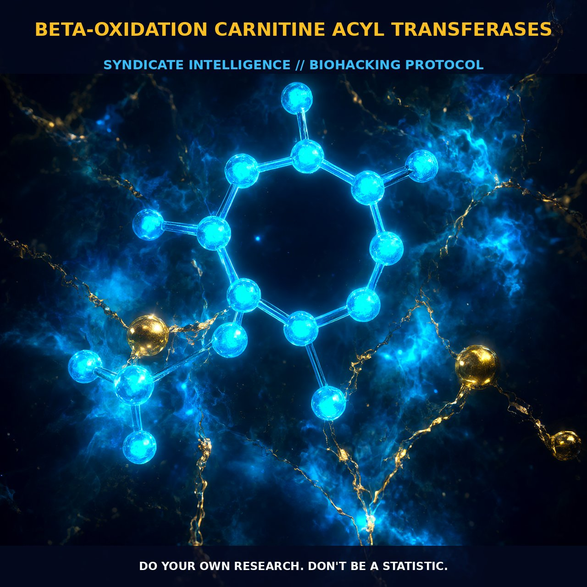

Carnitine Acyltransferases: The Biochemistry of Beta-Oxidation

1. The Mechanism
Carnitine acyltransferases are integral enzymes in the metabolism of fatty acids, playing a crucial role in the transport of long-chain fatty acids across the mitochondrial membrane. These enzymes are essential for the efficient utilization of fatty acids as an energy source, catalyzing the reversible transfer of acyl groups from acyl-coenzyme A esters to l-carnitine, forming acyl-carnitine esters. This process is critical for the transport of these molecules across cell membranes.
The key players in this mechanism include carnitine acetyltransferase (CAT) and carnitine palmitoyltransferase-1 (CPT-1). CAT is primarily responsible for the export of excess acetyl groups from the mitochondria and is involved in acetylation reactions that regulate gene transcription and enzyme activity. CPT-1, on the other hand, facilitates the transport of long-chain acyl groups into the mitochondria, where they undergo beta-oxidation to produce acetyl-CoA, a key molecule in the citric acid cycle.
The carnitine shuttle system operates within a highly regulated environment. CPT-1 is a transmembrane protein located on the outer mitochondrial membrane, catalyzing the conversion of acyl-coenzyme A esters to acyl-carnitine esters. This process is reversible, with carnitine palmitoyltransferase-2 (CPT-2) anchored on the matrix side of the inner mitochondrial membrane, converting acyl-carnitine esters back to acyl-coenzyme A esters, which can then be utilized in metabolic pathways such as mitochondrial beta-oxidation. The carnitine-acylcarnitine translocase (CACT) transports these acyl-carnitine esters across the inner mitochondrial membrane, ensuring that the fatty acid oxidation process proceeds efficiently. This system is vital for maintaining energy homeostasis, particularly in tissues with high energy demands, such as skeletal muscle, heart, and liver.
2. Biological Leverage
Carnitine acyltransferases are essential for maintaining energy balance and cellular function. They are particularly crucial in tissues with high metabolic demands, such as the heart and skeletal muscle, where they facilitate the efficient transport of fatty acids into the mitochondria for beta-oxidation. This process is vital for the production of ATP, the primary energy currency of the cell. The carnitine shuttle system ensures that fatty acids are effectively metabolized to generate acetyl-CoA, which can then enter the citric acid cycle and contribute to ATP production. This system is tightly regulated and responds to various physiological conditions, such as fasting, exercise, and metabolic stress, ensuring that energy production is optimized under different conditions.
Carnitine acyltransferases also play a role in cellular signaling and gene regulation. Carnitine acetyltransferase (CAT) is involved in acetylation reactions that regulate gene transcription and enzyme activity. Acetylation is a post-translational modification that can alter the activity and localization of proteins, influencing a wide range of cellular processes, including metabolism, transcription, and signal transduction. This regulation is essential for maintaining cellular homeostasis and adapting to changing environmental conditions. Additionally, carnitine and its derivatives can influence insulin sensitivity and glucose metabolism, enhancing the body's ability to utilize glucose and store glycogen. This makes carnitine an important factor in maintaining metabolic health and energy balance.
3. Tactical Implementation
To leverage the benefits of carnitine acyltransferases, biohackers can incorporate specific supplements and practices into their regimen. Acetyl-L-Carnitine (ALCAR), a synthesized form of L-Carnitine, is particularly effective as it readily crosses the blood-brain barrier and enhances mitochondrial energy production. The usual suggested dosage for ALCAR is 500 to 1,500 mg per day. This range allows for individual optimization based on metabolic needs and sensitivity. Timing is also crucial; taking ALCAR on an empty stomach can enhance its absorption and bioavailability. Stacking ALCAR with other nootropics such as Alpha-GPC can further enhance cognitive function by supporting acetylcholine synthesis and neurotransmission.
Incorporating dietary sources of carnitine can also provide additional benefits. Foods rich in carnitine, such as red meat, dairy products, and fish, can supplement endogenous production. However, the bioavailability of dietary carnitine can vary, and supplementation may be necessary for optimal metabolic function. Ensuring adequate intake of lysine and methionine, the precursors for carnitine biosynthesis, can support endogenous production. Additionally, engaging in regular physical activity can enhance the efficiency of the carnitine shuttle system, promoting fatty acid oxidation and energy production.
Prostar Life Hack
To optimize the benefits of carnitine acyltransferases, take Acetyl-L-Carnitine (ALCAR) in a range of 500 to 1,500 mg per day, preferably on an empty stomach, and consider stacking it with Alpha-GPC for enhanced cognitive function.
[ AUTHOR: LEAD TECHNICAL RESEARCHER ]